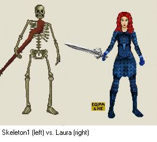

Unusual bashing shenanigansThis one was a bit of a different bash! I originally turned up just to spectate, as my subscription time had run out and I was still waiting for the time I'd won on the Scavenger Hunt to be activated. However, Hawumph took pity on my bash-less state, and decided to sorcerise me (well cabalist-ify, anyway) so I could take part for a bit. He couldn't leave poor Laura stuck guesting on her own in the tearoom, so she got the super-cabalistify-expialidocious arch-wizardly magic put on her too. Weirdly enough, this meant I was both a guest and a sorcerised persona, which had some odd ramifications. I couldn't repeat commands using dots like usual (which, as I was a little laggy, made moving about quickly a bit of a chore!) but fortunately I wasn't stuck stranded in the guest-restricted rooms. Most of the mobiles were long gone by the time I got going - we were down to 51 with most of the set still to go. This was partially due to Haw's messing about, as he'd given everyone present at the start a significant stats boost, perhaps explaining the bash's fast pace. This made my poor little 75/75/75 cabalist look very weedy indeed by comparison! However, undaunted, I charged to attack the watersnakes in a kamikaze fashion. One fell, luckily, to my suicidal assault, but I ran into another and had to flee (on 5 stamina, yikes). I did my best to help with the rest of the bash, attacking skeleton, vampire, tiger, giant snake with teams, but my lowly status meant I frequently had to flee (on 1 stamina against the snake, double yikes!). Oh well, it's not like I was keeping the character anyway and at least I got a few hits in on most of them. The spider scared me, as I got a nasty dose of poison from it - luckily my sorcerised status kept me in the game, and my only loss was a few points and a little stamina. Many attempts were made to interfere with the bash from invisible players, attacking people, creating new mobiles or otherwise causing trouble. They even woke the mammoth up at one point, provoking the usual 'is it really awake?' arguments (which I was on the wrong side of this time …). Most wicked of all, an attempt was made to apeomance up a simian army to defeat our bashing. Luckily, I was able to sneak past the few that'd been created, and smash the object being used to make them. What a terrible thing to do, I've never done anything like that at all, honest! ;-) Fortunately all these problems were quickly swept aside, until only two mobiles remained - shark1, and a mystery mobile Hawumph had wickedly resurrected to outfox us. However, he'd reckoned without my sorcerised powers, as I was able to get into a certain room, with a certain item, and magically hunt for mobiles to my heart's content, despite the bale of hay that someone had placed there to block it off! It took a few minutes of spamming CTRL-L, but before long I discovered there was a mobile in the side passage of the mine - the canary! Within a matter of moments, the canary was dead, and we got 3000 points each! Unfortunately I couldn't keep the character, so I had him turned into an ape to roam the land for the last few minutes of the set, but, nonetheless, the bash had been a success. Apeomancer / Maxmage

Mail the author ... click here to return to the front page.
| ||||||